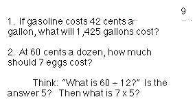
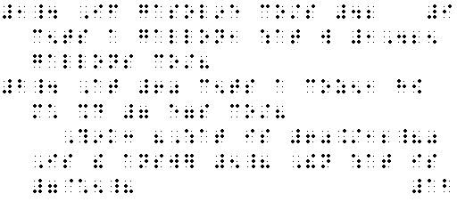
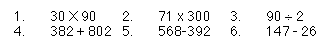
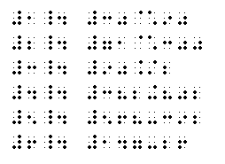
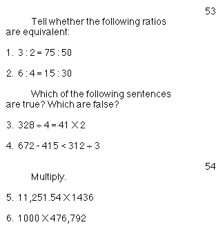
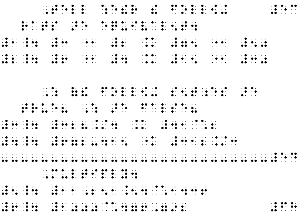
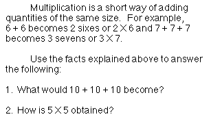
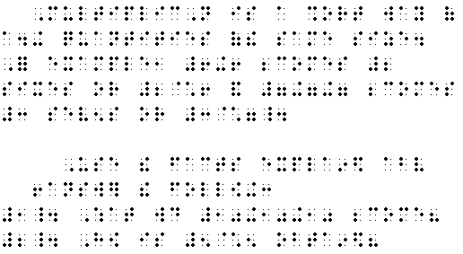

General Rules for Format: The principles provided in the Code of Braille Textbooks Formats and Techniques should ge followed unless specific format provisions are given in the braille code of mathematics. In the transcription of technical texts, a 41-cell braille line is recommended.
Margins for Itemized Material With No Subdivisions:
- When unsubdivided itemized material, including exercises or outlines, is numbered or lettered, the number or letter must begin in cell 1, and all runovers must begin in cell 3. If the material contain more than one paragraph, each new paragraph must begin in cell 5, and any runovers must begin in cell 3.


- When unsubdivided itemized material is arranged side by side across the page in print, the braille format must be changed so that all numbers or letters start in cell 1.


Division of Mathematical Expression between Braille Lines:
- Mathematical expression, such as a long numberal or an equation, must not be divided between braille lines or braille pages. If there is sufficient space on a line to accommodate the expression, this space must be left blank, and the entire expression must be brought down to the next line.
- A hyphenated expression, such as "6-sided," containing one or more mathematical components must not be divided between braille lines or braille pages.
Margins for Instructions Preceding Itemized Material: When itemized material is preceded by instructions, the instructions must begin in cell 5, and runovers must begin in cell 3. One line must be left blank above such instructions unless they begin a braille page or follow a new page-separation line. A line must not be left blank below the instructions. The last line of an instruction and the first line of the related problem must be on the same braille page.


Margins for Unitemized Explanatory Portions of Text: as in English braille, paragraphs in explanatory portions of text must begin in cell 3, and all runovers must begin in cell 1.


|
 Tჸe $_hodor bARionlegitim@.
Tჸe $_hodor bARionlegitim@.